-
Frontend CMS
Цей курс допоможе вам навчитися створювати веб сайти на основі системи керування контентом. Все, від скінування дизайну до підключення CMS. Цей курс дасть вам чудовий старт для фріланса або роботи в компанії.
Команда
-

Євген Григор’єв
Працює з рядом технологій, включаючи Symfony, Drupal, jQuery, Compass CSS, HAML, etc. Майстерність Євгена стоїть за такими проектами як Belvilla, Yes or No, Jongenvrij webshop, USGA та багато інших. У GeekHub викладає Frontend + CMS.
-
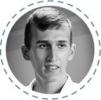
Олександр Тіняєв
Алекс (або ж Дікс, як його всі кличуть) займається Frontend, AngularJS, Sencha Touch та Wordpress розробкою в N3w Normal LLC вже протягом двох років. У GeekHub викладає Frontend + CMS.
-

Лавренко Андрій
Працює з рядом технологій, включаючи HTML5/CSS3, jQuery, SASS/SCSS/LESS, CoffeeScript, HAML, Twig, Require JS, Titanium SDK. Обожнює "чистий" код. У GeekHub викладає Frontend + CMS.
ТЕМИ ПИТАНЬ НА ЕКЗАМЕНI
- Що таке HTML (Wikipedia)
- Що таке CSS (Wikipedia)
- - Основи роботи інтернету (сервер, браузер, домен і т.п.). Матеріал брати тут: https://vk.com/videos-30111409 (Урок 1-4)
Слово від викладачів
Групові заняття проводитимуться 1 раз в тиждень ввечері, домашнє завдання на кожен урок складатиметься з 3 частин (що вимагатиме від студента мінімум 3 рази на тиждень приділяти увагу курсам вдома).
Зареєструватися -
-
Advanced CMS
Курс для тих, хто хоче навчитися створювати сайти різного рівня складності за допомогою популярних CMS Wordpress та Drupal. Якщо ви хочете робити вебсайти як професіонал, цей курс для вас. Особливості різних CMS, використання та написання плагінів та компонентів, інтеграція із соціальними мережами та сторонніми сервісами.
Команда
-

Сергій Гичка
Сергій займається розробкою веб проектів, використовуючи такі технології як Symfony 1, 2, Zend framework, Drupal, mysql, JS. У GeekHub Сергій викладає Advanced CMS.
-
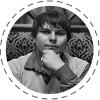
Владислав Ящук
Владислав займається розробкою веб проектів, використовуючи такі фреймворки як Symfony 2, Yii; CMS - Joomla, Wordpress, Magento. На GeekHub Владислав викладає курс Advanced CMS.
ТЕМИ ПИТАНЬ НА ЕКЗАМЕНI
- Базові знання HTML / CSS (HTML: структура сторінки, теги, посилання, зображення, форми, талиці; CSS: селектори, наслідування, псевдокласи, ідентифікатори і класи, інтеграція css-файлів з HTML)
- Базові знання PHP (синтаксис мови, основи ООП)
- Базові знання JavaScript (синтаксис, основи работи з JQuery)
-
-
Advanced PHP
AdvancedPHP для тих хто хоче розвивати свої базові навички в PHP. Курс заглиблюється у вивчення ООП, MVC та паттернiв проектування на базі найпопулярнішого php фреймворку Symfony2. Курс буде корисний тим, хто вже спробував себе у написанні простих сайтів/web-додаткiв за допомогою популярних платформ, таких як Joomla, WP ect. AdvancedPHP для тих хто хоче прокачати свої знання та навички для виходу на новий рівень, де вiдсутнi обмеження платформ чи мов програмування.
Команда
-

Олег Зінченко
Олег професiйно займаеться розробкою веб додаткiв на PHP з використанням сучасних фреймфоркiв. Адепт Symfony2 та MongoDB. Координатор та викладач напрямку Advanced PHP.
-

Сергій Поліщук
Студент GeekHub у минулому, а зараз - backend девелопер в успішній продуктовій компанії США. Сергій полюбляє складні завдання та прості рішення. У GeekHub викладає Advanced PHP.
-
Дмитро Немеш
Дмитро вже багато років розробляє web проекти, має досвід з Yii\Yii2, Symfony2, Spring 3. Є контриб'ютором Yii2 та полюблюяє використовувати нові технології. У GeekHub викладає Advanced PHP.
-
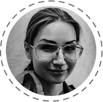
Яна Семенова
Молода і дуже талановита. Протягом всього кількох років змогла побудувати успішну кар’єру в ІТ. У GeekHub викладає Advanced PHP.
-
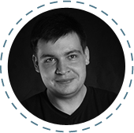
Пiсковий Дмитро
Дмитро займається розробкою веб проектів, використовуючи такі технології як Symfony (1, 2) , Zend Framework, Yii, nodeJs, mysql, mongoDB, JS, angular.js. У GeekHub Дмитро викладає Advanced PHP.
-
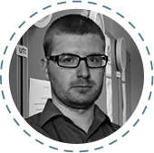
Костянтин Перевозчиков
Фрілансер. frontend/backend developer веб додатків. Улюблений PHP фреймворк - Yii. Прихильник масимальної автоматизації розробки. У GeekHub викладає Advanced PHP.
ТЕМИ ПИТАНЬ НА ЕКЗАМЕНI
- Базові знання HTML / CSS (HTML: структура сторiнки, теги, посилання, зображення, форми, таблицi; CSS: селектори, наслiдування, псевдокласи, iдентифiкатори i класи, iнтеграцiя css-файлiв у HTML)
- Базові знання PHP - ситаксис, змінні, оператори та конструкції (if, for, foreach etc.)
- Базовий рівень англійської в IT (розумiння технiчної літератури і документації, вміння називати змінні англійською);
- Загальне розуміння роботи web (протоколи (http, ...), методи (POST, GET, ...), заголовки (cookies, …), коди відповідей (404, 302, ...), сервери, домени, браузери, кукі);
- Базові UNIX команди (ls, cp, mv, rm, chmod (в т.ч. опції), mkdir, ssh);
- Встановлена UNIX система на ноутбуці й вміння з нею управлятися (Ubuntu, Mac OS X і т.д.);
- Велике бажання й мотивація :)
Слово від викладачів
Курс Advanced PHP буде складатися з трьох потоків - 2 з яких Symfony2 і 1 - Yii2. Перший місяць навчання буде відведено на загальні для всіх потоків теми, такі як Git, ООП, Composer, TDD. До нового року створимо простий тестовий проект. У другому півріччі будемо розділятися по командах (3-4 чоловіки) щоб виконати фінальний випускний проект.
Протягом всього навчального року викладачі будуть приділяти максимум уваги тим студентам які зможуть показати свої здібності до навчання та матимуть можливість (і звичайно використовуватимуть її) працювати самостійно не менш ніж 10 год/тиждень. Для цього, раз на місяць, будуть проводитись автоматичні тестування, а також буде братися до уваги активність кожного студента на GitHub.
Випускники курсу Advanced PHP мають впевнено та доцільно використовувати паттерни проектування, знати та вміти використовувати вибраний фреймворк для побудови масштабованих, тестованих сервісів з відкритим REST API.
Зареєструватися -
-
JavaScript
Курс призначений для людей, які хочуть вивчити Javascript зсередини. Курс включає: вивчення мови в деталях, техніки програмування та фреймворків, необхідних, щоб зробити все: від швидкого AJAX додадку, до сучасних великомасштабних додатків.
Команда
-
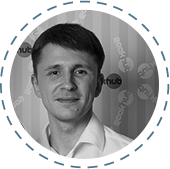
Сергій Ключник
Активний учасник багатьох відкритих проектів, завжди вивчає щось нове зі світу JavaScript. У GeekHub викладає Javascript.
-
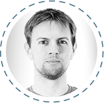
Fred Cox
Fred has been coding for over 10 years, his first mobile app was published before anyone knew what a smartphone was. Now he the techinal lead at eKreative where the focus is on web and mobile apps. Teaches Javascript at GeekHub.
-
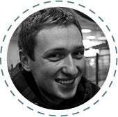
Валерій Олексієнко
Backend та frontend веб-розробник. Основні технології, з якими працює: Spring (MVC, Security), Hibernate, mySql, MongoDB, jQuery, Ext.js Хоббі включають сноуборд, музика, mobile development. У GeekHub Валерій викладає Java for Web.
ТЕМИ ПИТАНЬ НА ЕКЗАМЕНI
- Базові знання HTML
- Базові знання ООП
- Навички програмування на скриптовій мові програмування
- Синтаксис javascript
Слово від викладачів
JS - незвичайна мова, тому будемо максимально концентруватись спочатку на ній, потім на инструментах розробки, в кінці - на фрейморках. Протягом курсу будуть проводитись міні-екзамени для перевірки засвоеного. Також будуть практичні уроки. На курс набирається 2 потоки, по два викладача на потік, тому кожному учню буде достатньо уваги.
Зареєструватися -
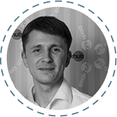
-
iOS
Курс для швидкого старту в розробці програмного забезпечення під популярну мобільну платформу iOS.
Команда
-
Тимофій Козак
Тимофій працює одночасно над декількома проектами - presentain.com, vkorange.com, chedream.org, geekhub.ck.ua". У GeekHub викладає курс iOS.
-
Павло Надолинський
Він бачив багато і може з радістю цим поділитися. У GeekHub викладає iOS.
ТЕМИ ПИТАНЬ НА ЕКЗАМЕНI
- (Ноутбук з OS X) АБО (PC з OS X + iPhone/iPad/iPod Touch)
- Базові навички програмування. (змінні, функції, цикли, умови, типи данних, алгоритми)
- Базові знання ООП
- Базовий рівень англійської в IT (вміння розуміти технічну літературу і документацію, називати змінні англійською);
Курс розрахований на новачків.
Однією з вимог є компютер з встановленою операційною системою OS X, віднесіться до цього відповідально, так як без нього робити на курсі вам нічого.
Що будемо вчити:
Курс складається з 2х частин. 1ша - ви попарно пишете програму, яку ми вам замовляємо. 2га - ви робите випускну програму, яку самі вигадаєте. Ми дамо вам всі знання, щоб ви могли зробити 1шу. На основі другої ви або отримаєте, або не отримаєте випускний сертифікат.Шлангування і поблажки - це не у нас.
Зареєструватися -
-
Android
Android - найпопулярніша операційна система для смартфонів. В цьому курсі ми охопимо найважливіші елементи побудови додатків для цієї платформи. Ознайомимося з основними компонентами UI та UX. Навчимося їх правильно використовувати. Також навчимося працювати в команді та побудуємо корисні додатки.
Команда
-
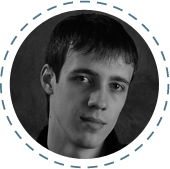
Дмитро Таряник
Android розробник, активный учасник GDG Cherkasy. У GeekHub викладає Android. На рахунку Дмитра такі проекти як Heineken Nederland Magazine, LifeChurch Android app. У GeekHub викладає Java for Android.
-
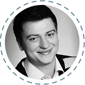
Сергій Босовський
Cергій протягом 4х років займається розробкою Android додатків в компанії Master Of Code. У GeekHub Сергій викладає Java for Android.
ТЕМИ ПИТАНЬ НА ЕКЗАМЕНI
- Знання ООП
- Базові знання JAVA (синтаксис, класи, інтерфейси, колекції, наслідування тощо)
Курс передбачає базові знання Java або здатність швидко здобути ці знання.
Протягом курсу ви розробите 3 додатка для Android. Третій додаток ви напишете попарно. На основі нього, а також випускної співбесіди буде визначено, отримаєте ви сертифікат чи ні."
Зареєструватися -
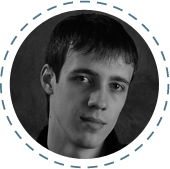
-
Ruby on Rails
Ruby on Rails (RoR) є популярним та затребуваним фреймворком для написання веб-сервісів на мові програмування Ruby. Використовуючи основні переваги Ruby (динамічна мова для об'єктно-орієнтовного програмування, що відрізняється лаконічністю і інтуітивністю) та еталонної MVC архітектури — RoR дозволяє розробляти якісні веб-сервіси швидкими темпами. Серед веб-проектiв, що написані на Ruby on Rails можна виділити — GitHub, Twitter, Basecamp, Groupon, YP, Shopify та інші.
Команда
-

Олег Пасько
Олег полюбляє розв'язувати бізнес-задачі в IT за допомогою RoR. На рахунку Олега такі проекти як shopius.ru, totravelme.ru, clickaway.ru та ряд інших цікавих проектів для різних компаній. У GeekHub Олег викладає Ruby on Rails.
ТЕМИ ПИТАНЬ НА ЕКЗАМЕНI
- Базові знання HTML / CSS (HTML: структура сторiнки, теги, посилання, зображення, форми, таблицi; CSS: селектори, наслiдування, псевдокласи, iдентифiкатори i класи, iнтеграцiя css-файлiв у HTML)
- Базовий рівень англійської в IT (розумiння технiчної літератури і документації, вміння називати змінні англійською);
- Загальне розуміння роботи web (протоколи (http, ...), методи (POST, GET, ...), заголовки (cookies, …), коди відповідей (404, 302, ...), сервери, домени, браузери, кукі);
- Базові UNIX команди (ls, cp, mv, rm, chmod (в т.ч. опції), mkdir, ssh);
- Встановлена UNIX система на ноутбуці й вміння з нею управлятися (Ubuntu, Mac OS X і т.д.);
- Велике бажання й мотивація :)
-
-
Groovy & Grails
Познайомтесь з одним з найпотужніших фреймворків для швидкої розробки веб-додатків. Гнучкість динамічної мови Groovy (що є надмножиною Java, що на 100% сумiсна Groovy) поєднуються з силою та рiзноманiтнiстю Java бiблiотек та фреймворкiв. Grails - це не тільки набір бібліотек, але й певна філософія розробки, що базуеться на паттернах та найкращих практиках, які стали загальноприйнятими не тільки в середовищі Java, але й в програмуванні вцілому. Спираючись на відносно низький поріг входження, ми спробуемо розглянути повний цикл розробки веб-додатку: побудова інтерфейсу, обробка внутрішньої логіки, зберігання даних.
Команда
-
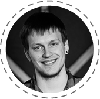
Богдан Данилюк
Богдан один з головних розробників компанії TransferWise. Прихильник швидких, динамічних та надійних рішень у розробці програмного забезпечення. Викладатиме курс улюбленої мови програмування та фреймворку - Groovy & Grails.
-
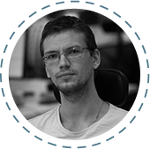
Вадим Васильєв
Вадим розробник у компанії TransferWise. У попередньому працював розробником та консультантом у банках різних країн Європи та світу. У GeekHub викладає Groovy & Grails.
-
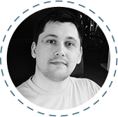
Сергій Карпенко
Сергій один з перших розробників у компанії TransferWise. У GeekHub викладає Groovy & Grails.
ТЕМИ ПИТАНЬ НА ЕКЗАМЕНI
- Знання структур данних та основ програмування (цикли, розгалудження і т.д.)
- Базові знання HTML/CSS
- Базові знання ООП
- Базовий рівень англійської в IT
- Загальне розуміння роботи web (протоколи, http статуси/заголовки/кукі, структура URL)
- Можливі питання базового рівню по Java, Unix командам та теорії баз данних."
Слово від викладачів
Команда викладачів курсу Groovy & Grails хотіла б привернути увагу людей з досвідом програмування (бажано java-stack), що хочуть вивчити новий та потужний інструмент для побудови свого проекту/стартапу. У той же час, керуючись досвідом минулого року, можна сказати, що низький поріг входження та краса :) Groovy & Grails дозволяють успішно завершити цей курс наполегливим студентам, які ще не мають бойового досвіду у програмуванні. Програма курсу дає можливість поступово освоїти Groovy та Grails. Починаючи з основи синтаксису і shell-скриптів на Groovy, і закінчуючи побудовою модульного та добре налаштованого Grails проекту. Під час курсу ми також розглянемо найкращі практики програмування та шаблони проектування (design patterns).
Для проходження курсу рекомендовано:
Зареєструватися
- ознайомитися з основами Java та особливостями роботи JVM
- мати ноутбук, бажано з UNIX системою та вмінням управлятися з нею (Linux Mint, Ubuntu, Mac OS X і т.д.)
- велике бажання та мотивація :)" -
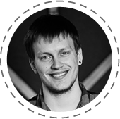
-
Java for Web
Java -- це основа ентерпрайз технологій. Ви ознайомитесь із мовою, основними классами і пакетами, а також найбільш популярними та потужними фреймворками для розробки веб-аплікейшенів. Курс вимагає підвищеного рівня самостійної роботи, але отримані знання приносять особливу винагороду в роботі.
Команда
-
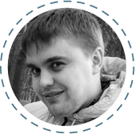
Юра Батора
Юра займається розробкою комерційних проектів на Java зі складною клієнт-серверною архітектурою. У GeekHub викладає Java for Web.
-
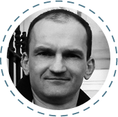
Богдан Халяпін
Богдан керує компанією SPD-Ukraine та займається її розвитком. Має більше ніж 12 років досвіду з Java. У складі GeekHub Богдан є викладачем та координатором групи Java for Web.
-

Андрій Береза
Андрій - сертифікований Java 7 Programmer з великим досвідом реалізації back-end та front-end, у тому числі на проектах створення фінансових систем. У GeekHub викладає Java for Web.
-

Володимир Білоус
Володимир є Java та Android розробником у SPD-Ukraine. Його основний проект -- nimblecommerce.com, що є яскравим прикладом реалізації eCommerce SaaS У GeekHub викладає Java for Web.
ТЕМИ ПИТАНЬ НА ЕКЗАМЕНI
- Знання ООП
- Базові знання JAVA (синтаксис, класи, інтерфейси, колекції, тощо)
- Основи веб-программування (протоколи, типи HTTP-запитів, DNS, etc.)
- Базовий рівень англійської
-
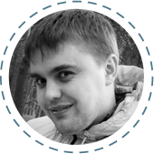
-
Project Management
Щоб стати досвідченим менеджером проектів потрібні роки спроб та помилок. Geekhub дає вам можливість набути практичних навичок та уникнути неприємних ситуацій в реальній роботі. Ми навчимо вас розуміти бізнес, відносини із клієнтами, девелоперами та звичайно вивчемо методології ведення проектів.
Команда
-
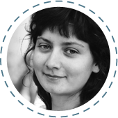
Альона Лісіцина
Альона має науковий ступінь PhD та працює головним проектним менеджером у компанії Master of Code LLC. У Geekhub Альона викладає Project Management.
-
Нік Курат
Нік займається розвитком бізнесу компанії Master of Code LLC та розвитком стартапу presentain.com . У складі Geekhub Нік викладає Project Management та працює над брендінгом та маркетингом проекту.
ТЕМИ ПИТАНЬ НА ЕКЗАМЕНI
- Основи роботи інтернету (сервер, браузер, домен і т.п.)
- Agile (маніфест)
- Scrum (основні принципи)
- Знання англійської мови (високий рівень) - обов’язково!
- Лідерські якості
- IT background
- Досвід організації заходів, проектів"
-
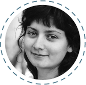
-
Quality Assurance
Курс для тих, хто вміє конструктивно критикувати та хотів би з цього навику зробити цікаву інноваційну професію. Ми допоможемо розібратися у непростій науці тестування програмного забезпечення та веб-сайтів, навчимо писати змістовні тест-плани, підкріпивши знання практичними навичками, розберемо базу автоматизованого тестування, зробивши впевнені кроки у її засвоєнні, та спробуємо виховати у студентах тягу до прекрасних продуктів з чудовим юзабіліті та безбажним змістом.
Команда
-
Олена Перекопська
Олена має значний досвід у сфері контролю якості та управління проектами. У GeekHub викладає Quality Assurance.
-
Ірина Нікуліна
Випускниця GeekHub, зараз працює QA інженером у MasterOfCode. У GeekHub викладає Quality Assurance.
ТЕМИ ПИТАНЬ НА ЕКЗАМЕНI
- Знання загальної термінології тестування програмного забезпечення та сайтів
- Розуміння основних принципів тестування
- Розуміння принципів роботи різних систем та програмних продуктів
- Базовий рівень англійської
-
-
Business English
Навички спілкування у діловому середовищі. Якщо ви лідер команди або менеджер проектів, Business English допоможе вам здобути корисні інструменти для ефективних комунікацій як всередині команди так і з клієнтами.
Команда
-

Tim Phipps
Since gaining his CELTA teaching qualification, Tim has specialised in private English lessons, meeting a wide range of student needs. At Geekhub Tim leads the Technical English course.
-
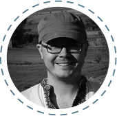
Віктор Євпак
Loves briniging the best in people, helping them realise their potential as professionals and humans. Has a beautiful wife and two amazing children. He is a lawyer by education, enterprenuer by calling and story-teller by hobby. У GeekHub викладає Business English.
ТЕМИ ПИТАНЬ НА ЕКЗАМЕНI
Зареєструватися -
-
Web & Mobile Design
Це динамічний та насиченний навчальний курс, який дає змогу отримати базові знання з Веб дизайну та дизайну мобільних додатків. Ви дізнаєтесь як проектувати інтерфейси та робити сайти зручними для відвідувачів. Отримаєте базові знання по композиції, фірмовому стилю, шрифтам та роботі з ком'ютерними програмами для подальшого розвитку у галузі дизайну.
Команда
-
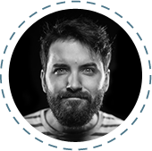
Богдан Свиридов
Богдан має великий досвід у дизайні. Його пристрасть – зручні, прості та зрозумілі речі. У GeekHub Богдан викладає Web & Mobile Design.
-
Таня Ігнатенко
У Pixel Grow Тетяна займається веб дизайном та дизайном мобільних додатків. Вона приділяє багато уваги невеликим але важливим деталям. Полюбляє лаконічний дизайн та котів :) У GeekHub викладає Web & Mobile Design.
-
Олександр Булла
Дизайнер eKreative. У GeekHub викладає Web & Mobile Design.
ТЕМИ ПИТАНЬ НА ЕКЗАМЕНI
- Що таке Веб дизайн, та в чому його відмінність від графічного дизайну та дизайну поліграфії.
- Що таке UI та UX (розуміння навіщо це потрібно).
- Як та навіщо малювати Sketch, Wireframe, Mockup.
- Базові вміння накреслити лінію, зробити простий ескіз.
- Принести приклади своїх робіт по веб дизайну (реальні чи пробні проекти)
- Гарний смак та бажання постійно його розвивати.
-
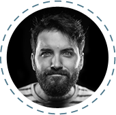
-
Game Production
Часи, коли ігри створювали фанатики-одинаки давно позаду. Сьогодні шалено зростаюча індустрія геймдеву відкриває двері широкому колу спеціалістів. Курс Game Production познайомить учнів із процессом створення комп’ютерних ігр, особливостями ведення GDD, допоможе розібратися з ігровими механіками, жанрами, тенденціями, термінологією... А ще, надихне спостерігати, помічати, пробувати, вивчати життя, бо, як не дивно, часто саме це визначає якісний геймдев :)
Команда
-
Вікторія Однокоз
Вікторія має за плечима декілька випущених ігр у ролі від геймдизайнера до керівника проекту. Зараз у ENKI Games займається розвитком основного продукту компанії. У GeekHub викладає Game Development.
ТЕМИ ПИТАНЬ НА ЕКЗАМЕНI
- Які ігрові жанри знаєте?
- В які ігри, в яких жанрах грали в останній час (покажіть мобільний, які ігри там є :)?)
- Что таке розробка гри (по вашому)?
- На якій ролі у геймдев команді бачите себе і чому?
- Якими навиками має володіти геймдизайнер?
- У чому сила Pacman чи Mr Mario? :)
- Створіть квест із того, что бачите у кімнаті.
Слово від викладачів
Человек может пройти курс, быть при этом программистом \ тестером \ проект-менеджером и т.д. Но этот человек будет иметь представление о том, с чего начинается продукт, зачем его делать, для кого, как анализировать данные, как продвигать его, как управлять продуктом, кого для этого надо поключить и т.д. Без понимания хотябы базовых вещей: целевая аудитория, рынок, конкуренты, спрос, статистических метрик, социальных сетей, как все это работает и какие бывают инструменты, мне кажется вообще разработка невозможна, ни игр, ни приложений, ни сайтов. Если говорить о продукте, а не аутсорсе.
Человек, закончив курс, в компании может начать с тестера \ геймдизайнера \ QA \ маркетолога \ саппорта \ аналитика статистики, неважно. Главное, чтобы у него было понимание того, чем он занимается, как может влиять на процессы и что должно получиться в конечном итоге.
Зареєструватися -